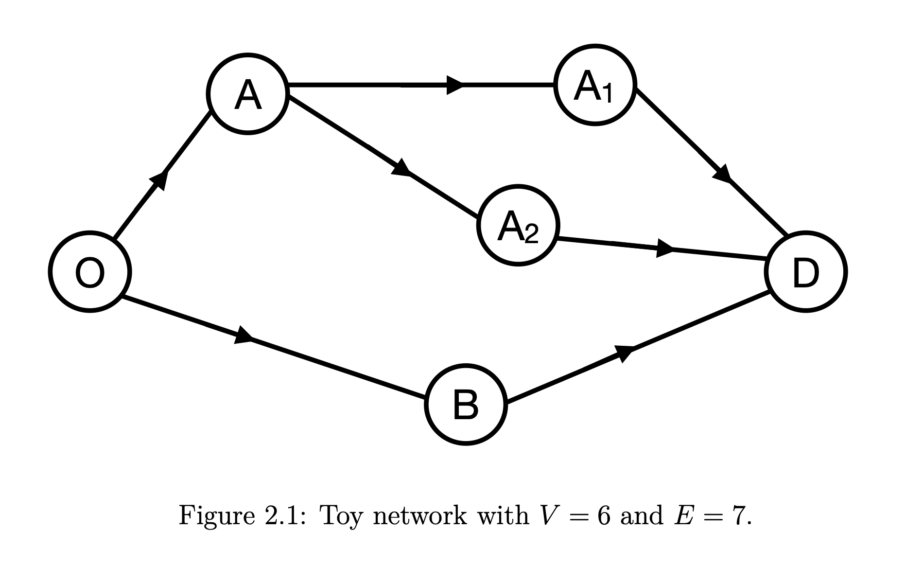
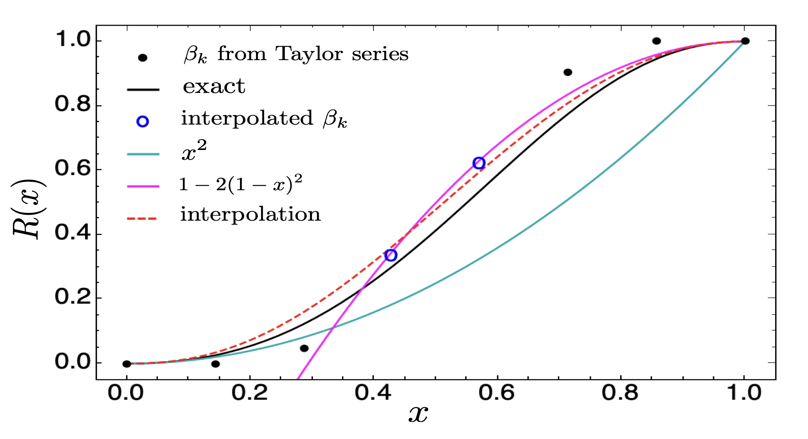
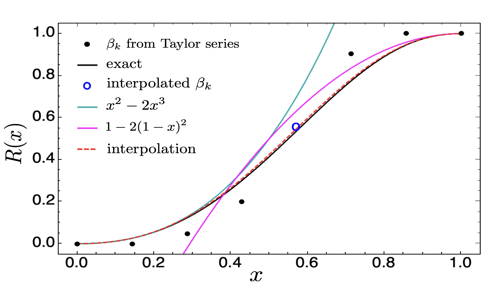
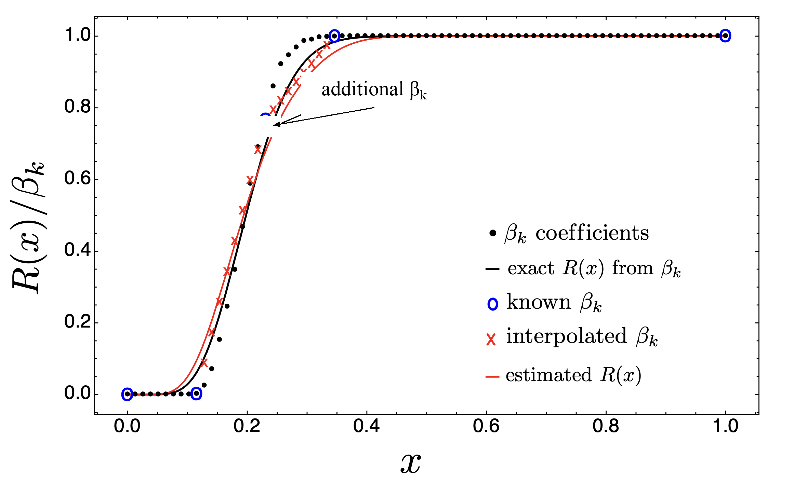

A graph dynamical system (GDS) \(\mathcal{G}\) consists of a finite graph with a vertex set \(V\) and an edge set \(E\), together with a vertex function and an update scheme. The vertices represent the components of a system and the edges represent interactions between them. \(\mathcal{G}\) may be directed, weighted, multiplexed, time-dependent, or composed of inhomogeneous nodes. The state of each vertex changes at each time step according to the states of its neighbours. Moore-Shannon network reliability \(R(x;\,\mathcal{G},D,P)\) gives the probability that \(\mathcal{G}\) satisfies a property \(P\) under dynamics \(D\), where \(x\) is the per-edge probability of activation and \(E = |E|\) is the number of edges. If \(P_k\) denotes the fraction of size-\(k\) subgraphs satisfying \(P\), then the probability of selecting a particular subgraph of size \(k\) from all \(E\) edges and having it satisfy \(P\) is \(P_k x^k(1-x)^{E-k}\), and summing over all subgraph sizes gives
\[R(x;\,\mathcal{G},D,P) \;=\; \sum_{k=0}^{E} P_k \binom{E}{k} x^k(1-x)^{E-k}.\]Evaluating this sum exactly is \(\#P\)-hard in general. \(R\) is a monotonically non-decreasing polynomial of degree \(E\) with \(R(0) = 0\) and \(R(1) = 1\). These properties — monotonicity and the boundary conditions — allow it to be written in the Bernstein basis.
Any degree-\(E\) polynomial can be written in the Bernstein basis with control points \(\{(k/E,\,\beta_k)\}\):
\[R(x) \;=\; \sum_{k=0}^{E} \beta_k\, B(E,k,x), \qquad B(E,k,x) = \binom{E}{k} x^k(1-x)^{E-k}.\]The Bernstein coefficients \(\beta_k\) are obtained from the Taylor coefficients \(\alpha_l\) of the expansion around \(x=0\) via
\[\beta_k \;=\; \sum_{l=0}^{k} \alpha_l \binom{E-l}{E-k} \Bigg/ \binom{E}{k}.\]An analogous transformation applies to the expansion around \(x = 1\). The two Taylor series are combined in the Bernstein basis, which is evaluated stably using de Casteljau's algorithm. As more Taylor coefficients become known, the approximation converges to the exact polynomial.
For a large class of problems, \(R(x;\,\mathcal{G},D,P)\) can be constructed from the probabilities of certain subgraphs called cruxes. A strut is a subgraph \(g\) of \(\mathcal{G}\) for which \(R(g) > 0\); a cut is a subgraph for which \(R(\mathcal{G} \setminus g) = 0\). A minimal strut (resp. cut) is a strut (resp. cut) with no proper sub-strut (resp. sub-cut). Collectively, minimal struts and cuts are called cruxes. The Taylor series around \(x = 0\) is built from minimal struts; the series around \(x = 1\) from minimal cuts. When cruxes are not known analytically, Monte Carlo sampling identifies them. Two parameters control approximation quality: \(S\) (Monte Carlo samples) and \(D\) (expansion depth). The resulting bounds are provably tight and narrow as \(S\) and \(D\) increase.
The figures alongside show a small example graph where \(R(x)\) is known exactly. The dashed red curve is the Bernstein interpolation using Taylor coefficients from both ends — (a) using the first three coefficients from each end and (b) using the first four. In both cases the Bernstein estimate is closer to the exact polynomial than either Taylor series alone.
On the Zachary Karate Club network — a social network with 34 vertices and 78 edges — adding a single Bernstein coefficient at \(k = (k_{\min} + k_{\max})/2 = k_{\min} + 9\) to the boundary-only estimate already improves it substantially. Measuring 7 additional \(\beta_k\) values — rather than all 17 unknown ones — gives a good estimate of \(R(x)\), as long as the right 7 values are chosen.
Moore-Shannon network reliability is a global statistic which depends on both the dynamics and the structure of a GDS, and is a degree \(N\) polynomial where \(N\) is the system size. The Bernstein basis is a natural basis for the reliability polynomials and is more useful and superior to Taylor expansions for estimating such high-degree polynomials. The Bernstein coefficients \(\beta_k\) can either be evaluated by a simple transformation from the Taylor coefficients or estimated using Monte Carlo simulations. The Bernstein polynomials are not only excellent estimators but also provide tight, provable bounds, and the coefficients are related to the dynamics of the network.



